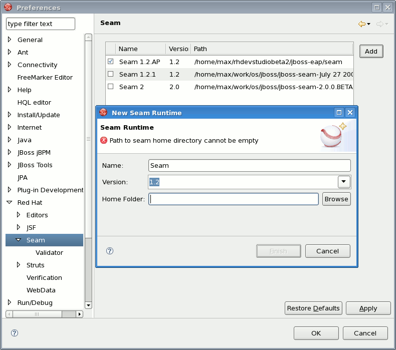
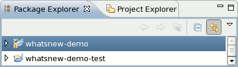
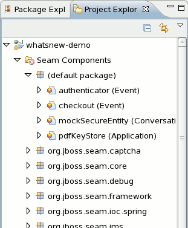
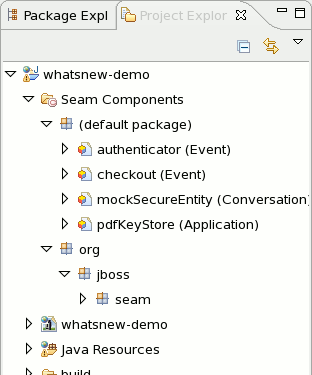
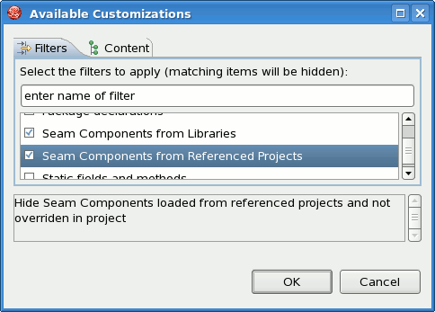
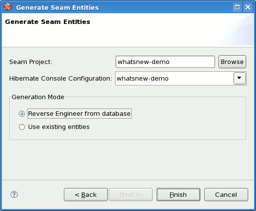
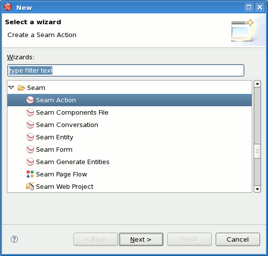

Configuration
Seam Runtimes
There is now preferences for defining Seam Runtimes, to allow using different versions/distributions of Seam.
Note that only Seam 1.2 is fully supported; using a Seam 2 library might cause issues since Seam 2 support is not added yet.

Seam Projects
Eclipse WTP style Seam projects for both WAR and EAR projects
To utilize Eclipse WTP features (and to have a correct classpath) the Seam project wizard now generates projects like Eclipse WTP likes it; namely one project per artifact.

Project layout for WAR projects.
 Project layout for EAR projects.
Project layout for EAR projects.
Seam hotdeploy for WAR
WAR projects are generated to enable Seam 1.2.1 war hotdeploy feature.
Classes put into src/action will be deployed to WEB-INF/dev from which Seam 1.2.1 automatically will perform hotdeploy of new components.
Note: because of Eclipse WTP limits the hot deployed classes also exist in WEB-INF/classes, but since Seam gives WEB-INF/dev precedence it will work.
Test(NG) project
Seam project wizards now generates a test project that is setup to run TestNG directly against the proper libraries and server runtime libraries.
When the TestNG plugin is installed you can just run your tests via "Run As..."/TestNG suite.
Dependent Seam Projects
Previously only the projects classes and libraries were scanned for Seam components. Now dependent projects are also scanned (if they have Seam enabled).
Views
Seam perspective
A Seam perspective have been added to provide the most essential views and shortcuts directly available.
Seam Package presentation
The Seam components view now support showing Seam "packages" hierarchical or flat.

Seam Packages flat presentation.

Seam Packages hierarchical presentation.
Seam components from Referenced Projects filter
A new filter option have been added to Seam components to hide unused seam components from referenced projects
The Seam Component View can be filtered by choosing "Customize View..." and select the "Seam Components from Referenced Projects" under the Filters tab.

Wizards
Seam Generate Entities
Generate Entities is now available directly from within Eclipse using Hibernate Tools plugin for the standard seam-gen generation.
Generate Entities generates a set of CRUD Seam components and web pages based on existing tables in a database or on existing entities in your application.

Seam X wizards
All the Seam component generations options known from Seam-gen is now available as wizards (with sensible auto-defaulting) for creating various common Seam components.
- Seam Action
- Seam Form
- Seam Entity
- Seam Conversion

The wizards creates multiple resources and placed in the apropriate folders dependent on your project structure (WAR or EAR)